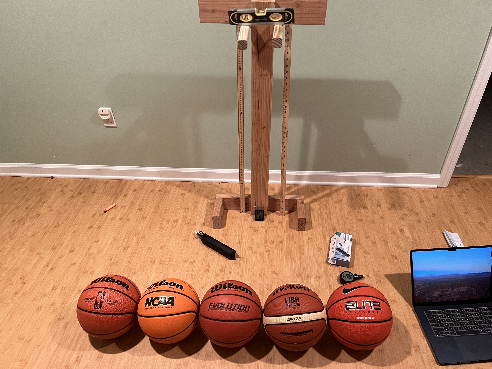

The Effect of Dribbling Different Official-Regulation Basketballs in Terms of their Retention of Air
R. Mander, K. Agnostak-Koenig
High Technology High School, 765 Newman Springs Road, Lincroft, NJ 07738

Background
- Basketballs endure repeated forces, especially from dribbling, causing material deformation.
- Elastic collisions explain how a basketball bounces after interacting with the ground.
- Regulation basketballs vary in size (29.5-30.7 inches) and air pressure (7.5-8.5 PSI).
- High-tech methods track bounce height but not air pressure retention.
- Using an automated drop system and air pressure gauge offers better insights.
- The study evaluates which basketballs retain air pressure and bounce best
Abstract
- Basis: Basketballs are made from various elastic materials for performance and durability.
- Independent variable: type of basketball model.
- Dependent variables: Air pressure and bounce heights
- Experiment: free-fall-dropping a basketball 200 times
- Hypothesis: official basketball models retain air pressure differently.
- Results: Significant differences in all variables (p-values < .05).
- Conclusion: Material properties significantly affect a basketball's air pressure retention.
Methods and Procedure
- Basketballs Tested: Five official regulation basketballs, including a control (NBA Wilson basketball) and four experimental models (Wilson NCAA, Wilson Evolution, FIBA Molten, Nike Elite All-Court).
- Equipment: Electric ball pump (Pumteck MY01) for air pressure measurements, hardwood basement floor for testing, and a custom-built drop apparatus made from pine wood using various power tools.
- Dropping Apparatus: Basketballs dropped from a height of 39 inches using a wooden structure, with recordings taken for bounce height.
- Testing Environment: Maintained at 65°F and 35-50% humidity to simulate a typical basketball competition environment.
- Camera Setups: Three setups with different camera angles, with offset values applied to account for perspective distortion in bounce measurements.
- Data Collection: Each basketball was dropped 200 times over three trials, with air pressure and bounce heights measured every 10 drops.
- Data Analysis: Statistical significance was assessed using ANOVA and post hoc t-tests on air pressure and bounce heights across trials.
Conclusions
- Hypothesis Supported: Significant differences in air pressure retention and bounce heights among basketballs.
-
Statistical Findings:
- Air pressure p-value < .0001
- First-bounce p-value: .007
- Second-bounce p-value < .0001
- Third-bounce p-value < .0001
-
Key Results:
- Best Performance: Wilson Evolution excels in air pressure retention and bounce height.
- Material Impact: Composite leather enhances performance; fewer grooves improve bounce consistency.
-
Future Studies
- Exploration Areas: Investigate material properties' impact on performance and consider using an automatic dribbler for more accurate simulations.
- Additional Studies: Examine ball spin effects on flight dynamics, aiding league regulations.
- Contribution: Establishes a baseline for understanding how material differences affect basketball performance.